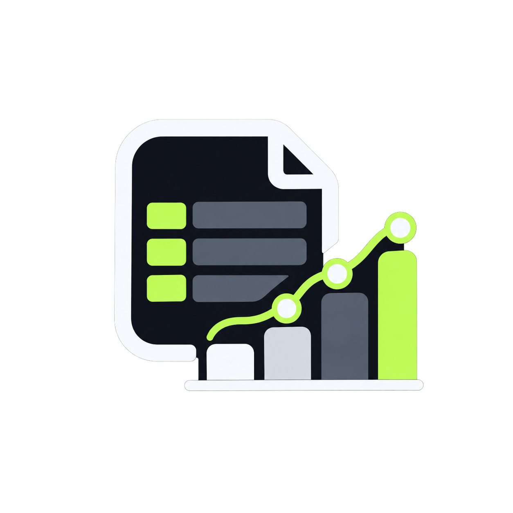

AI / ML / DL
Machine Learning · Deep Learning · Generative AI · RAG · AI Agents · Agentic AI · LLM Fine-Tuning · Prompt Engineering · Computer Vision
AI & FULL STACK DEVELOPER
I’m Kuldeep Soni — an AI/ML engineer in the making, building RAG systems, AI agents, intelligent automation and modern full-stack products.
Open to opportunities / internships in AI
agent = AIEngineer( name="Kuldeep", focus=[ "RAG", "Agents", "GenAI", "Full Stack" ] )
01 / ABOUT
I’m an aspiring AI/ML Engineer and Full Stack Developer focused on turning ideas into useful, production-oriented applications.
My work sits at the intersection of Machine Learning, Deep Learning, Generative AI, RAG, AI Agents and web development. I enjoy taking an idea from architecture to interface and making the pieces work together.
02 / TOOLKIT
A practical stack spanning AI, data, backend, frontend and developer tooling.
Machine Learning · Deep Learning · Generative AI · RAG · AI Agents · Agentic AI · LLM Fine-Tuning · Prompt Engineering · Computer Vision
LangChain · Pydantic · FastAPI · TensorFlow · Scikit-learn · NumPy · Pandas · Matplotlib · OpenCV · Embeddings · Vector Search
Python · JavaScript · React.js · Node.js · Express.js · REST APIs · FastAPI · HTML5 · CSS3 · Tailwind CSS · Vite
MongoDB · MySQL · SQLite · ChromaDB · Atlas Vector Search · Information Retrieval
Python · JavaScript · C++ · C · Java
Git · GitHub · VS Code · Postman · Docker · Google Colab · DSA · OOP · DBMS · OS · Computer Networks · n8n
03 / SELECTED WORK
Wide recruiter-friendly cards. View project flips the card here; Open project takes you to the project in a new tab.
AI-powered travel platform built as an attempt to clone the Incredible India website, with a Gemini AI assistant for personalized Indian destination recommendations and culturally focused itineraries.

End-to-end Agentic AI RAG system that ingests YouTube transcripts, chunks and embeds content into ChromaDB, then answers questions with contextual responses and timestamps.

Production-ready client-side visualization platform that parses CSV data directly in the browser and transforms raw tables into interactive charts and dynamic views.
Hands-free voice-controlled desktop automation tool using Python and speech recognition to launch applications, position the mouse, control keyboard input and execute custom tasks.
04 / EDUCATION
Indore Institute of Science and Technology, Indore
CGPA: 7.5 / 10Padmaja Higher Secondary School, Dewas (M.P.) · MP Board
86.2%Padmaja Higher Secondary School, Dewas (M.P.) · MP Board
91%05 / BEYOND CODE
Algorithmic problem solving, clean coding, DRY/SOLID principles, adaptability, collaboration and independent contribution.
AI research, technical articles, reading, sketching, travel and writing.
English · Hindi
Madhya Pradesh State Government Scholarship recipient for academic excellence.
06 / CONTACT
Currently looking for AI-focused internship and opportunity roles where I can learn fast, contribute meaningfully and build real-world systems.